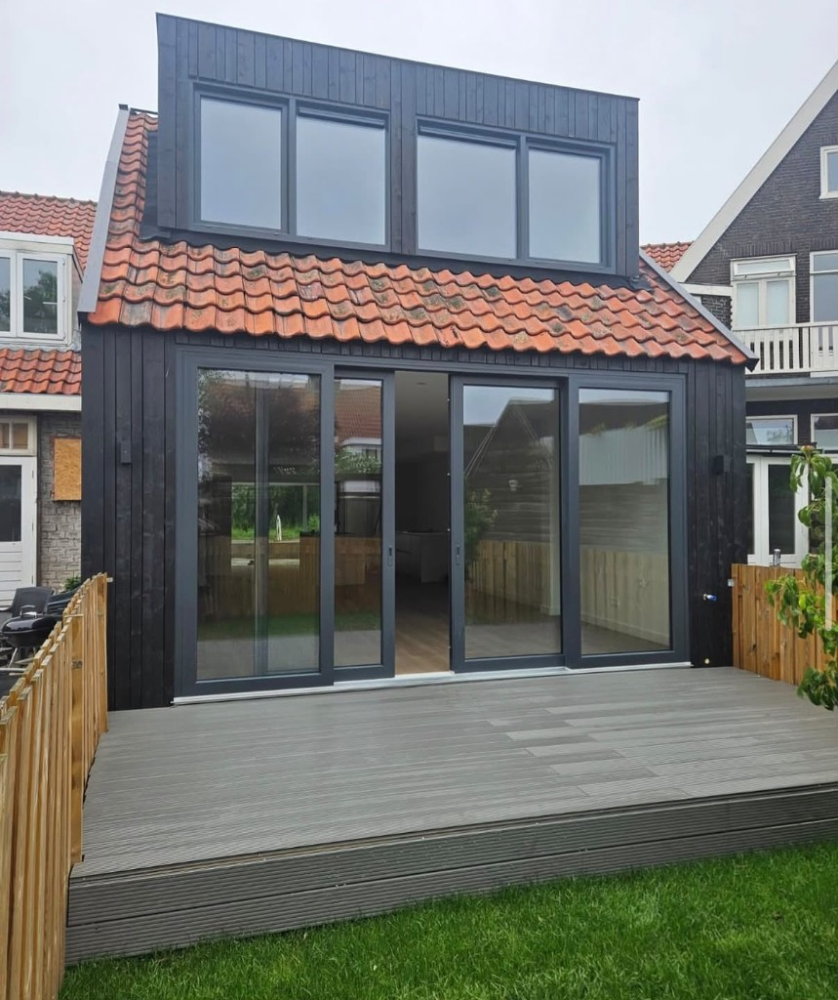

Nieuw-Vennep: blijven loont vaak
Nieuw-Vennep ligt handig in Haarlemmermeer: ruimte, voorzieningen en bereikbaarheid. Verhuizen naar “iets groters” klinkt simpel, maar betekent vaak een hogere koopsom, overdrachtskosten en maanden onzekerheid. Een aanbouw of dakopbouw houdt je buurt, school en hypotheek bij elkaar, en voegt meters toe waar je ze nodig hebt.
Niet elke woning kan hetzelfde. Plat dak of schuin dak, diepe of ondiepe tuin, rijwoning of twee-onder-een-kap: dat bepaalt of een aanbouw, dakopbouw of nokverhoging het meest logisch is.

Drie routes naar meer ruimte
- Aanbouw: uitbouw op de begane grond, vaak naar de tuin
- Dakopbouw: extra verdieping als je begane grond al vol zit
- Nokverhoging: meer hoogte en bruikbaar volume onder een schuin dak
Wij leveren dit als casco: wind- en waterdicht, isolatie, kozijnen, elektra tot casco-niveau. Geen complete binnenafwerking in de standaardindicatie. Zo blijft helder wat je koopt, en wat je later nog afbouwt. Zie ook Wat zit erbij.
Zo kom je tot een prijsindicatie
- Open de calculator en kies je type project
- Vul formaat en opties in, de visualisatie groeit mee
- Bekijk de transparante prijsindicatie
- Plan een afspraak voor de definitieve offerte op locatie
Aanbouwdirect werkt vanuit Aalsmeer. Nieuw-Vennep en Hoofddorp liggen in ons werkgebied; we komen graag langs als je verder wilt.
Vergunning en planning
Of je vergunningvrij mag bouwen of een omgevingsvergunning nodig hebt, hangt af van jouw kavel en plannen. Gemeente Haarlemmermeer / het omgevingsloket is leidend. Reken vergunningstijd mee in je planning, vooral bij dakopbouw of grotere volumes. Wij denken mee over de bouwpraktijk; de formele toetsing blijft bij de gemeente.
Veelgestelde vragen
Wat kost een dakopbouw in Nieuw-Vennep?
Dat hangt af van m², constructie en opties. Online krijg je een bandbreedte; de definitieve prijs volgt na opname. Geen vaste “vanaf”-spam, wel een eerlijke indicatie.
Kunnen jullie ook in mijn straat werken?
Meestal wel. Twijfel je? Mail of bel met je postcode, we zeggen eerlijk of het past.
Is casco genoeg om in te wonen?
Casco is bouwtechnisch dicht en geïsoleerd, maar nog niet afgewerkt van binnen. Plan afbouw apart als je direct wilt intrekken in de nieuwe ruimte.
Eerst weten of het ongeveer past?
Stel je plan voor Nieuw-Vennep samen en zie meteen een prijsindicatie. Of bel ons.